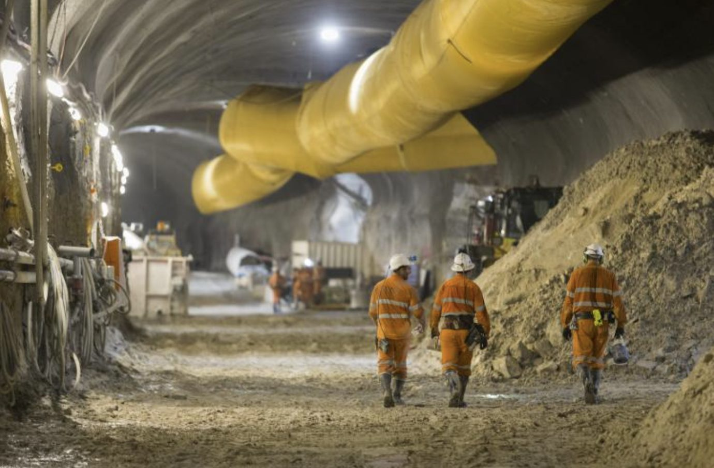
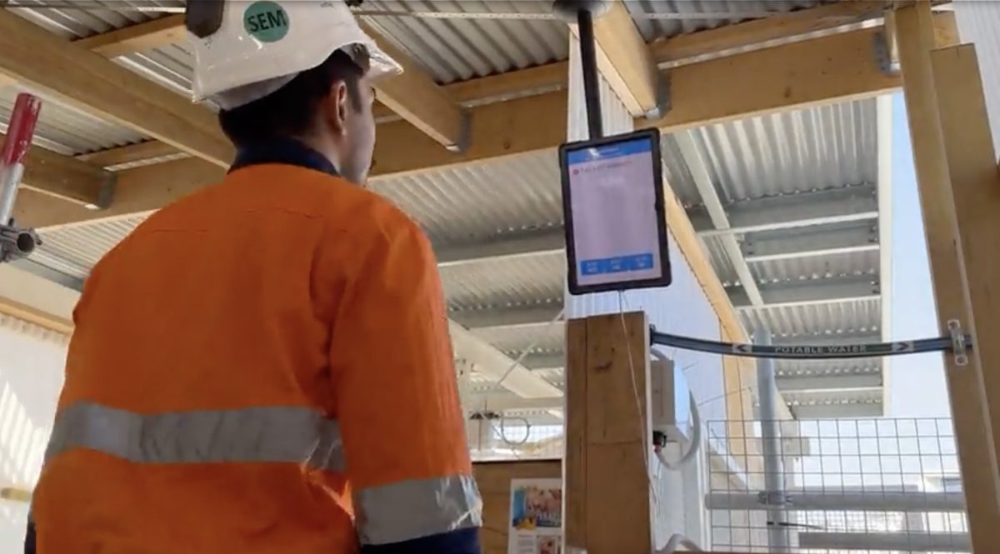

M6 Motorway Stage 1
Australia, Sydney

Tunnelling
Creating Operational Visibility Across Complex Infrastructure Projects
Major tunnelling projects are among the most complex operational environments in the world.
The challenge is maintaining a shared operational understanding across the project
iottag helps tunnelling organisations improve visibility, coordination and operational awareness through Operational Intelligence.
Tunnelling projects involve hundreds of personnel, vehicles, equipment and operational activities occurring simultaneously.
The Operational Digital Twin creates a live operational representation of the project environment, helping teams understand:
checkWho is on site
checkHow conditions are changing
checkWhere activity is occurring
checkWhere attention may be required




Workforce visibility is critical within underground environments. The platform supports:
By providing a shared operational understanding, organisations can improve situational awareness and support safer operations.
Beyond safety, tunnelling projects require efficient coordination across multiple work fronts.
The platform helps organisations understand:
Supporting more informed operational decision-making throughout project delivery.

Government owners require confidence that projects are being delivered safely and effectively. Operational Analytics & Benchmarking helps provide a consistent operational picture across every level of the project hierarchy.

Subcontractors require operational visibility

Main contractors require project oversight

Joint ventures require project assurance

Beyond safety, tunnelling projects require efficient coordination across multiple work fronts.
The platform helps organisations understand:
Supporting more informed operational decision-making throughout project delivery.
Applications Include
Operational Intelligence helps create safer, more coordinated and better informed tunnelling operations.
Infrastructure
Australia, Sydney

Australia, Sydney

Australia, Sydney

Australia, Victoria

Australia, Victoria

Singapore

Singapore

Singapore

Create a shared operational understanding across your project.